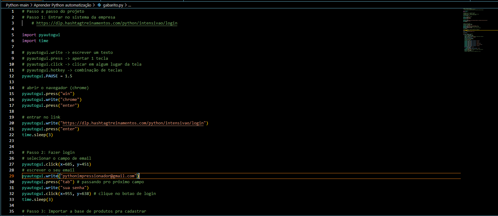

Gustavo Tenório
Eu sou Desenvolvedor
Sobre mim
Estudante de Análise e Desenvolvimento de Sistemas, com experiência prática em automação de processos, análise de dados e suporte técnico. Venho desenvolvendo APIs em Java com Spring Boot e aplicativos mobile em Flutter na faculdade, além de conhecimentos em Hardware | HTML | CSS | Microsoft Office | Flutter Flow | JavaScript | C++ | C | SQL e Python.
Desenvolvedor & Analista de Processos
Estou atuando no administrativo da empresa, Capricórnio onde lido com os dados da produção e com os colaboradores, usando planilhas, Power BI e bancos de dados para tais fins.
- Aniversário: 26 JUN 2005
- GitHub: https://encurtador.com.br/jThLg
- Telefone: +11 9 9997-7069
- Cidade: Bragança Pta
São Paulo
Brasil
- Idade: 21
- Formação: Superior (cursando)
- Email: gustavobarros.tenorio@gmail.com
- Freelancer: Disponível
Curiosidade: Sou Apaixonado pela tecnologia por jogos, anime, música rock e metal 🤘
e a
busca por conhecimento 📚
Clientes felizes
E subindo
Projetos
Entre eles soluções,
e estudos
Horas de suporte e estudo
Co Workers nos quais ajudei na área
Habilidades
Estas são minhas atuais habilidades, mas ainda estou em constante aprendizado e aprimoramento, buscando expandir minhas experiências em áreas como desenvolvimento web, programação e análise de dados.
Resumo
Estou empolgado com a oportunidade de ter entrado IFSP, uma organização renomada na educação cujos valores estão alinhados com os meus. Acredito que posso agregar valor por meio do meu esforço e colaborar para a consecução dos objetivos das instituições que me derem a chance.
Educação
Análise e desenvolvimento de sistemas - instituição : IFSP
2024 - Graduando
Estou graduando em Análise e Desenvolvimento de Sistemas pelo IFSP Campus Bragança PTA, com expertise em elaboração, análise e coordenação de projetos de software.Curso voltado para a documentação, desenvolvimento, teste, implantação e manutenção de sistemas de informação, utilizando metodologias, tecnologias e ferramentas avançadas da engenharia de software. Proficiente em garantir atributos de qualidade como funcionalidade, usabilidade, segurança e eficiência. Possui conhecimento sólido em hardware, sistemas operacionais e infraestrutura de rede. Capacitado para realizar vistorias, perícias e emitir pareceres técnicos, adotando uma abordagem ética e legal. Demonstrado empreendedorismo com foco em soluções informatizadas sustentáveis e socialmente responsáveis.
- Av. Maj. Fernando Valle, 2013 - São Miguel, Bragança Paulista - SP, 12903-000
- (11) 4034-7800
- braganca@ifsp.edu.br
Hardware - instituição - Microcamp
2018 - 2020
Este curso especializado prepara os alunos de forma abrangente para o mercado de trabalho, proporcionando conhecimentos sólidos em hardware e periféricos essenciais. Por meio de aulas interativas e dinâmicas, os participantes são treinados para montar, configurar e reparar computadores, notebooks, impressoras, monitores e redes de internet, tanto com fio quanto sem fio. Já obtive o certificado de conclusão foi uma boa oportunidade.
- Av. Antonio Pires Pimentel, 736 – Centro, Bragança Paulista – SP, 12914-001L
- (11) 4033-5241
- bragancapaulista@microcamp.com.br
Desenvolvimento de Sistemas - instituição - PROZ
2021 - 2023
Um curso técnico para capacitar o aluno para atuar no desenvolvimento de softwares e sistemas computacionais, aplicando técnicas e ferramentas específicas para a criação e manutenção de programas, foi aplicado junto ao ensino médio na E.E. Mathilde Teixeira de Moraes, ajudou a fortalecer meu contato com a tecnologia.
- R. Osvaldo Russomano, C - Cidade Planejada I, Bragança Paulista - SP, 12922-150
- (11) 4031-5073
- e900187a@educacao.sp.gov.br
Experiências profissionais
Auxiliar administrativo
2023 - Atuando
Empresa: Capricórnio Têxtil
- Realizo análize de dados através de planilhas, Power BI e bancos de dados para tais fins.
- Crio novos sistemas para facilitar análise
- Forneço suporte aos colaboradores, em apontamento e resolução de problemas.
- Realizo requisições de compras e ajudo o controle de estoque químico do setor
Jovem aprendiz
2021 - 2023
Empresa: Capricórnio Têxtil
- Aqui adquiri minha primeira experiência no mercado de trabalho e as seguintes habilidades:
- Resolução de Problemas : Trabalhei com pessoas incriveis que me ajudaram a entender os processos para resolver um problema. Capacidade de se Adaptar | Autonomia.
- Trabalho em Equipe : Aprendi que o motivo de trabalharmos juntos é pois juntos somos melhores que sozinhos e que ter uma boa comunicação ajuda muito nisso
- Capacidade de se adaptar e autonomia : As coisas nem sempre saiam como eu queria, mas nem por isso eu desisti, e isso fez as coisas melhorarem
Técnico em informática
2019 - 2021
Trabalho Freelancer
- Para levantar uma grana, com o conhecimento adquirido no curso de hardware e meu gosto por tecnologia arrumava computadores e celulares, isso me ajudou bastante, vez ou outra ainda pego um para arrumar, nunca se tornou um negócio grande, mas valeu a experiência e tempo
Portfólio
Segue uma breve lista de trabalhos em que contribuí com o desenvolvimento:
- All
- App
- Produto
- Detalhes

Automação de relatórios de produção (ERP)
Automatizei com Python (Playwright) a extração de relatórios de estoque e produção diretamente do ERP da empresa, incluindo o tratamento e a organização automática dos dados em planilhas para o setor de PCP, reduzindo o tempo gasto em tarefas manuais repetitivas.


Serviços
Algumas das áreas em que posso ajudar:
Automação de Processos
Automação de tarefas repetitivas com Python, incluindo extração de relatórios de sistemas e organização automática de dados em planilhas.
Análise de Dados
Construção de indicadores e dashboards em Power BI para acompanhamento de produção e apoio à tomada de decisão.
Desenvolvimento de Sistemas
Criação de pequenos sistemas e ferramentas sob medida para facilitar o dia a dia operacional de setores administrativos.
Suporte Técnico
Suporte a colaboradores em apontamentos e resolução de problemas, além de manutenção de computadores e periféricos.
Relatos
Aqui alguns relatos de pessoas que já trabalharam comigo:
Contato
Caso precise falar comigo, estou aberto nos seguintes meios:
Endereço
Rua Maria Occhietti Bruno, 192 - Cidade Planejada II, Bragança Paulista - SP, 12922-740
Telefone celular:
+55 11 99997-7069
gustavobarros.tenorio@gmail.com